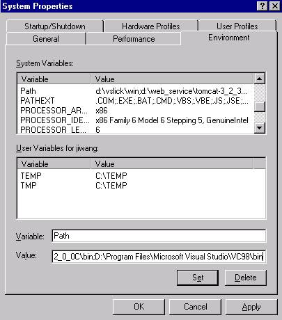
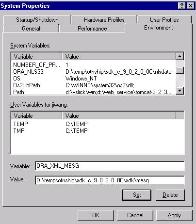
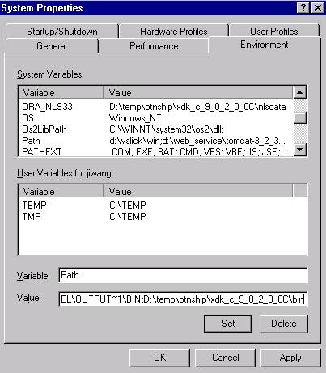
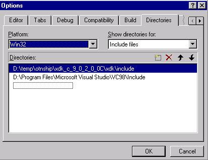
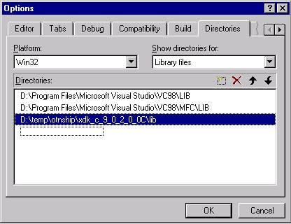
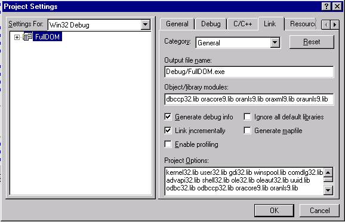

Note that the XDK directory will be referred to as $XDK_HOME or %XDK_HOME% and that the Oracle home will be referred to as $ORACLE_HOME or %ORACLE_HOME% in later sections.
UNIX: tar xvfz xdk_xxx.tar.gz Windows: use the WinZip visual archive extraction tool
The C XDK components are in libxml10.a. Previous releases had additional libraries but now there is only one library for all components.
The XDK C Components package depends on the Oracle CORE and NLS libraries, which are listed in the following table:
Table 3.2: Libraries of dependent XDK C Components |
||
|
|
|
|
|
CORE Library
|
libcore10.a
|
Oracle CORE library
|
|
NLS Library
|
libnls10.a
|
Oracle NLS common library
|
|
libunls10.a
|
Oracle NLS library for Unicode support
|
|
| -c | Conformance check only, no validation |
| -e encoding | Specify default input file encoding ("incoding") |
| -E encoding | Specify DOM/SAX encoding ("outcoding") |
| -f | File - Interpret |
| -h | Help - show usage help and full list of flags |
| -i n | Number of times to iterate the XSLT processing |
| -l language | Language for error reporting |
| -n | Number - DOM traverse and report number of elements |
| -o XSLoutfile | Specify output file of XSLT processor |
| -p | Print document after parse |
| -r | Do not ignore <xsl:output> instruction in XSLT processing |
| -s stylesheet | Style sheet - specifies the XSL style sheet |
| -v | Version - display parser version then exit |
| -V var value | To test top level variables in CXSLT |
| -w | Whitespace - preserve all whitespace |
| -W | Warning - stop parsing after a warning |
| -x | SAX - exercise SAX interface and print document |
The Schema Validator may be called as an executable by invoking bin/schema which takes two arguments: the XML instance document and optionally a default schema to apply. It has the following options:
| -0 | Always exit with code 0 (success) |
| -e encoding | Specify default input file encoding ("incoding") |
| -E encoding | Specify output/data/presentation encoding ("outcoding") |
| -i | Ignore provided schema file |
| -o num | Validation options |
| -p | Print instance document to stdout on success |
| -u | Force the Unicode code path |
| -v | Version - display version then exit |
In order to run the command line executables, you need to first check if the environment variable ORA_NLS10 is set to point to the location of the NLS encoding definition files. If you install the Oracle database, you can set it to be:
setenv ORA_NLS10 ${ORACLE_HOME}/nls/data
If there is no Oracle database is installed, you can use the NLS encoding
definition files which come with the XDK release (which are a subset of
what is in the Oracle database release) by:
setenv ORA_NLS10 ${XDK_HOME}/nls/data
Error message files are provided in the xdk/mesg/ subdirectory. Files ending in .msb are machine-readable and needed at runtime; files ending in .msg are human-readable and include cause and action descriptions for each error. The messages files also exist in the $ORACLE_HOME/xdk/mesg directory. If no Oracle database is installed, you should set the environment variable ORA_XML_MESG to point to the absolute path of the xdk/mesg/ subdirectory in XDK release:
setenv ORA_XML_MESG ${XDK_HOME}/xdk/mesg
The XDK components may also be invoked by writing code to use the supplied APIs. The code must be compiled using the headers in the xdk/include/ subdirectory and linked against the libraries in the lib/ subdirectory. See Makefile in the xdk/demo/ subdirectory for full details of how to build your program.
The C XDK components are in libxml10.lib and libxml10.dll. Previous releases had additional libraries and DLLs but now there is only one library and DLL for all components.
The XDK C Components depend on the Oracle CORE and NLS
libraries, which are listed in the following table:
Table 3.4: Libraries of dependent XDK C Components |
||
|
|
|
|
|
CORE Library
|
oracore10.dll
|
Oracle CORE library
|
|
NLS Library
|
oranls10.dll
|
Oracle NLS common library
|
|
oraunls10.dll
|
Oracle NLS library for Unicode support
|
|
The Schema Validator may be called as an executable by invoking bin\schema.exe which takes two arguments: the XML instance document and optionally a default schema to apply. The options are listed in Section 3.1.2.
In order to run the command line executables, you need to first check if the environment variable ORA_NLS10 is set to point to the location of the NLS encoding definition files. If you install the Oracle database, you can set it to be:
set ORA_NLS10=%ORACLE_HOME%\nls\dataIf there is no Oracle database is installed, you can use the NLS encoding definition files which come with the XDK release (which are a subset of what is in the Oracle database release) by:
set ORA_NLS10=%XDK_HOME%\nls\data
Error message files are provided in the xdk\mesg/ subdirectory. Files ending in .msb are machine-readable and needed at runtime; files ending in .msg are human-readable and include cause and action descriptions for each error. The messages files also exist in the %ORACLE_HOME%\xdk\mesg directory. If no Oracle database is installed, you should set the environment variable ORA_XML_MESG to point to the absolute path of the xdk\mesg\ subdirectory in XDK release:
set ORA_XML_MESG=%XDK_HOME%\xdk\mesg
The XDK components may also be invoked by writing code to use the supplied APIs. The code must be compiled using the headers in the xdk\include\ subdirectory and linked against the libraries in the lib\ subdirectory. See Make.bat in the xdk\demo\ subdirectory for full details of how to build your program.
In order to compile the sample code in a command line environment, you need to set the path for the cl compiler.

Figure 3-1: Setup Path for cl compiler
Go to the Start Menu and select Settings ->Control Panel. In the pop up window of Control Panel, select the System icon and double click. A window named System Properties will pop up. Select Environment Tab and add the path of cl.exe to the PATH variable shown in Figure 3-1.
In addition, you need to update the Make.bat by adding the path of the libraries and header files to the compiling and linking commands: For example: Make.bat
:COMPILE set filename=%1 cl -c -Fo%filename%.obj %opt_flg% /DCRTAPI1=_cdecl /DCRTAPI2=_cdecl /nologo /Zl /Gy /DWIN32 /D_WIN32 /DWIN_NT /DWIN32COMMON /D_DLL /D_MT /D_X86_=1 /Doratext=OraText -I. -I..\..\..\include -ID:\Progra~1\Micros~1\VC98\Include %filename%.c
goto :EOF
:LINK set filename=%1 link %link_dbg% /out:..\..\..\..\bin\%filename%.exe /libpath:%ORACLE_HOME%\lib /libpath:D:\Progra~1\Micros~1 \VC98\lib /libpath:..\..\..\..\lib %filename%.obj oraxml10.lib oracore10.lib oranls10.lib oraunls10.lib user32.lib kernel32.lib msvcrt.lib ADVAPI32.lib oldnames.lib winmm.lib :EOF D:\Progra~1\Micros~1\VC98\Include: is the path for header files D:\Progra~1\Micros~1\VC98\lib: is the path for library filesThen, you should be able to use the Make.bat to compile and link the demo code and start programming using XDK C components.
Figure 3-2: Setup ORA_NLS10 Environment Variable
You need to make sure that the environment variable ORA_XML_MESG is set as discussed above.

Figure 3-3: Setup ORA_XML_MESG Environment Variable
To set up the PATH for *.dll, please refer to the following figure:

Figure 3-4: Setup Path Environment Variable
After opening a workspace in Visual C++ and including the *.c files for the project, you need to set the path for the project. Please go to the Tools menu in the menu bar and select Options. A window will pop up. Please select the Directory tab and set your include path and library path as shown in the following figure:

Figure 3-5: Setup include path in Visual C++

Figure 3-6: Setup static library path in Visual C++
After setting the paths for the static libraries in %XDK_HOME\lib, you also need to set the library name in the compilation environment of Visual C++.
Go to the Project menu in the menu bar and select Settings. A window will pop up. Please select the Link tab in the Object/Library Modules field put the name of XDK C components' libraries:

Figure 3-7: Setup static library in Visual C++ Project
After completing all of the above steps, you can compile
and run the demos provided for XDK C Components.
Any alias of the above character sets that is found here may also be used. In addition, any character set specified in Appendix A, Character Sets, of the Oracle National Language Support Guide may be used with the exception of IW7IS960. However, it is recommended that you use IANA character set names for interoperability with other XML parsers. Also note that XML parsers are only required to support UTF-8 and UTF-16 so those character sets should be preferred.
In order to be able to use these encodings, you should have the ORACLE_HOME environment variable set to the location of your Oracle installation. This will enable the use of the NLS data files which contain data for all supported encodings. NLS data files are usually located in $ORACLE_HOME/nls/data. If you don't have an Oracle installation (no $ORACLE_HOME), you must set the environment variable ORA_NLS10 to the absolute path of the nls/data/ directory in the XDK installation.
Using this XDK with an Oracle 8i installation is not supported. If you wish to try it on Windows anyway, you should copy the CORE and NLS DLLs and the NLSDATA files that are supplied with this XDK to your Oracle 8i home. In addition, you should set the environment variable NLS_TIME_TZ_FORMAT to HH.MI.SSXFF AM TZH:TZM and the enviroment variable NLS_TIMESTAMP_TZ_FORMAT to DD-MON-RR HH.MI.SSXFF AM TZH:TZM.
The default input encoding ("default_input_encoding") is UTF-8. That is, if an input document's encoding is not self-evident (by HTTP charset, Byte Order Mark, XMLDecl, etc), then the default input encoding will be assumed. It is recommended that you set the default encoding explicitly if using only single byte character sets (such as US-ASCII or any of the ISO-8859 character sets) since single-byte performance is by far the fastest. To force all documents to be read as a certain encoding, specify it as "input_encoding" (i.e. without the "default"). A forced encoding overrides BOM and XMLDecl, but not protocol declarations (such as HTTP charset).
The data encoding for DOM and SAX ("data_encoding") should be chosen carefully. Single-byte encodings are the fastest, but can represent only a very limited set of characters. Next fastest is Unicode (UTF-16), and slowest are the multibyte encodings such as UTF-8. If input data cannot be converted to the data encoding without loss, an error will occur. So for maximum utility, a Unicode-based data encoding should be used, since Unicode can represent any character. If data_encoding is not specified, it defaults to the input encoding of the first document parsed.
The XML Schema validator supports various encodings. The schema file and
instance XML document can be in different encodings. When a schema
context is created via the function XmlSchemaCreate, an internal
encoding, which is single byte or Unicode, is chosen based on the setting
of the provided parser's context (i.e., xmlctx). If the error message
"LSX-0016: schema and instance document have incompatible character sets"
is shown when validation is attempted, a new schema context with a new
parser context in a multibyte encoding (i.e., UTF-8, UTF-16, etc.) needs
to be created to proceed. Specifically, a new xmlctx needs to be
created with its "outencoding" parameter set to the above-mentioned multibyte
encoding and used in the new schema context's creation.